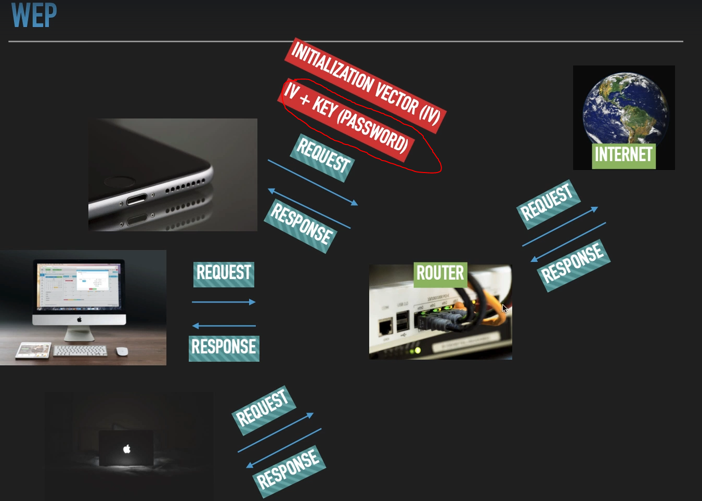

WEP şifreleme türünün çalışma mantığı

Yukarda ki resimde kırmızı yazılı ve işaretli kısımda gördüğümüz üzere modem WEP ile şifrelendiğinde cihazlar arası request--response alışverişi yaparken “IV(initialization vector) + KEY (PASSWORD)” adında iki değişken kullanır. Bu ikisi birleştirilip öyle şifrelenir. İşte bu alışveriş esnasında her bir request-response esnasında mesela telefondan modeme “IV+KEY(PASSWORD)” şeklinde değil ama “IV” kısmı gidiyor. Dışardan bir kişide bazı yöntemleri kullanarak bu “IV” kısmını görebiliyor “KEY(PASSWORD)” kısmını göremiyor. İşte bu noktada şöyle bir açık ortaya çıkıyor; bu “IV” kısmı sadece 24 bitlik küçük karakterlerden oluşuyor o yüzden belli bir yerden sonra tekrar etmeye başlıyor. Bu tekrar etme durumundan dolayı belli başlı programlar kullanılarak devamlı tekrar eden patternları, şemaları birbirleriyle eşleştirerek şifrelerle “KEY(PASSWORD)” eşleştirilip şifre kırılabiliyor.